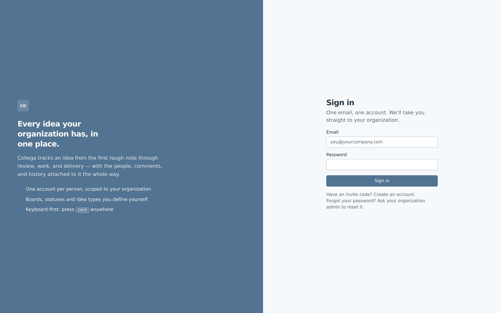
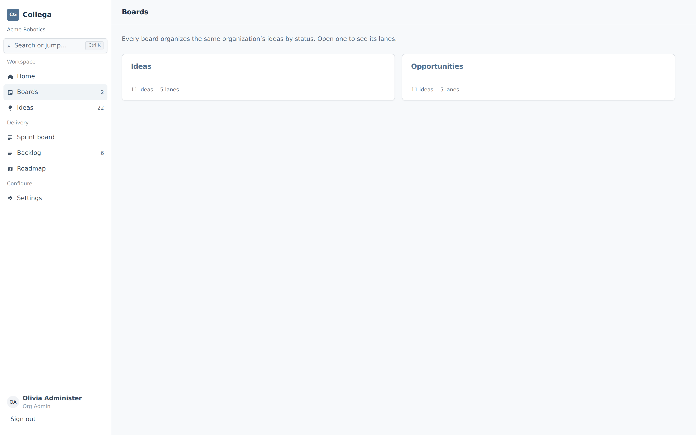
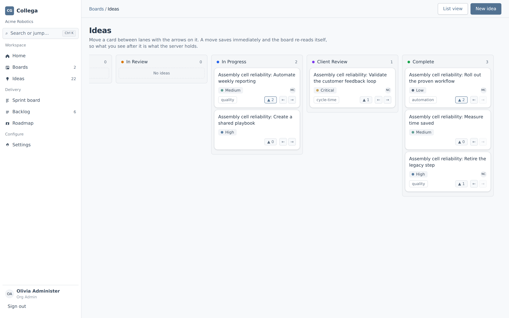
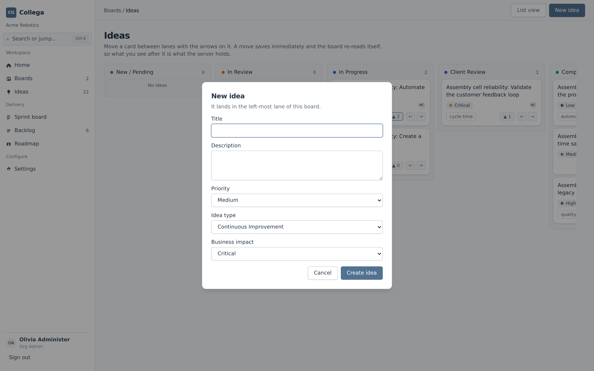
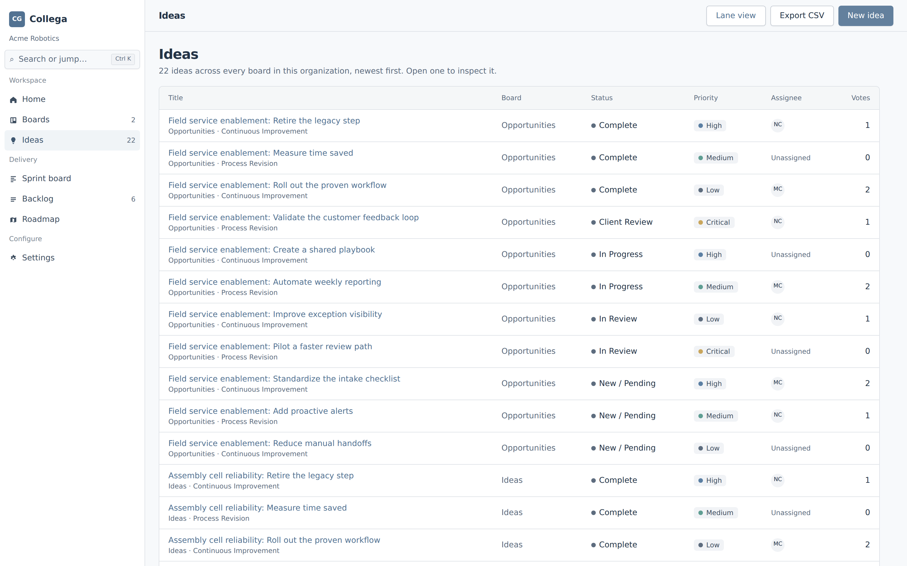
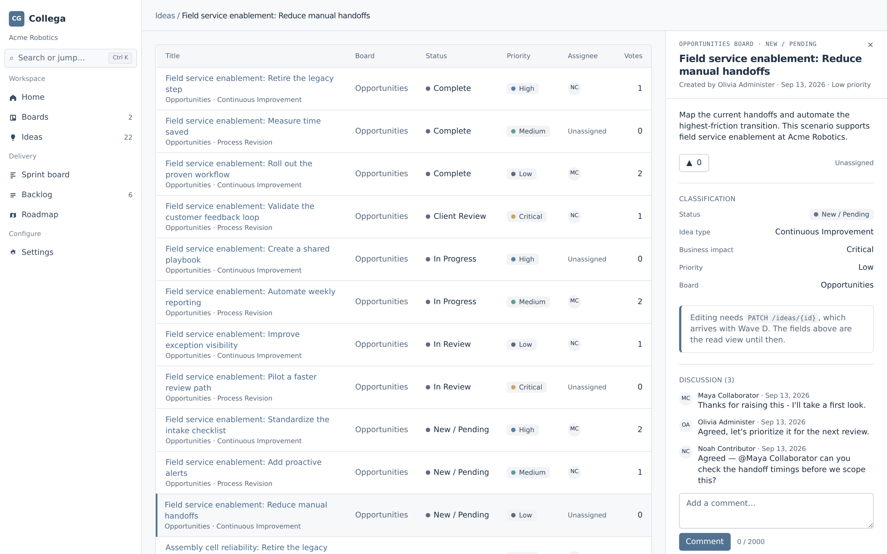
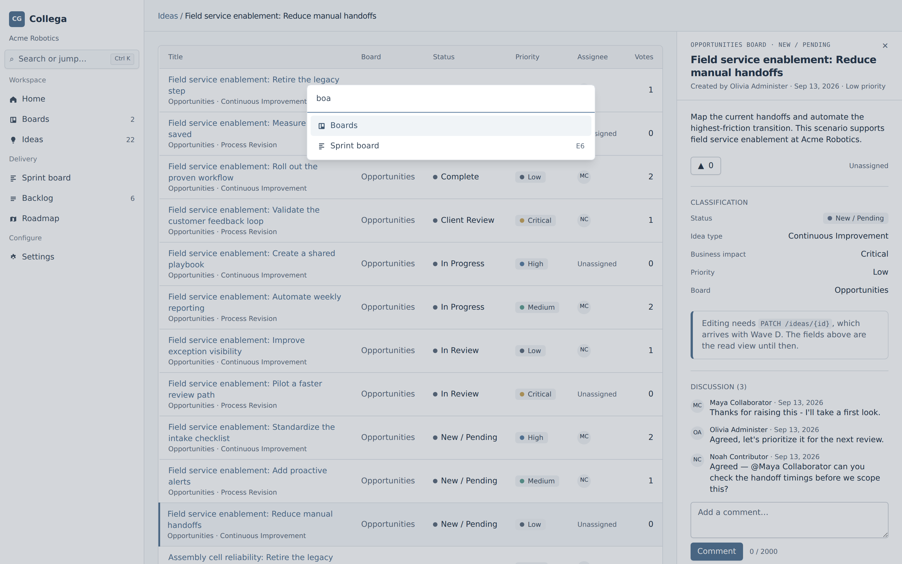
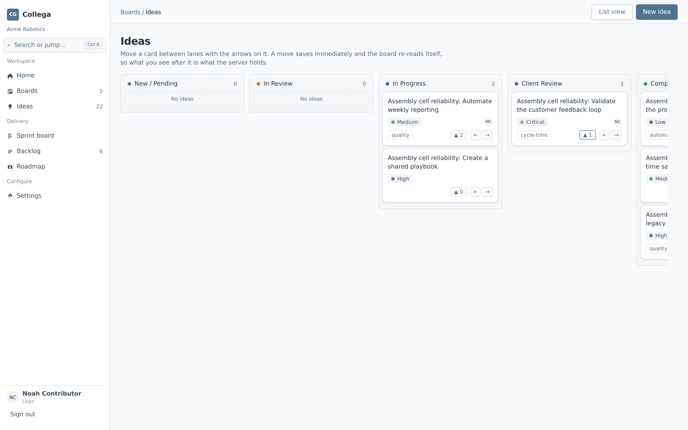

Eleven screens in the order a demo runs them, each one photographed from a running build
against the seeded Acme Robotics organization. Nothing here is a mockup, and nothing has been
retouched.
11 screens
3 permission levels
22 ideas across 2 boards
captured at 1600×1000 @2x
01/loginanonymous
One account, scoped to one organization
Sign-in is the whole front door. An account belongs to exactly one organization, and every board, idea and person it can reach is inside that boundary — there is no workspace switcher to get wrong.

02/boardsOrg Admin
Boards organize the same ideas different ways
An organization defines its own boards, and each one picks its own lanes from the organization’s status catalog. The counts are live: two boards, eleven ideas apiece, twenty-two in the organization.

03/boards/:boardIdOrg Admin
The board is the workflow
Lanes come from the board’s own status list, not a fixed set. A card carries its priority, tags, assignee and vote count; the arrows move it one lane at a time and each move saves immediately, so the board always shows what the server holds.
04/boards/:boardIdOrg Admin
Through to Complete
The same board, scrolled to its right-hand lanes. Client Review and Complete are ordinary statuses the organization configured — a team that works differently configures different ones.

05/boards/:boardIdOrg Admin
Raising an idea takes five fields
Title, description, priority, idea type and business impact. Idea type and business impact are per-organization catalogs, so the vocabulary on this form is the organization’s own — and the new idea lands in the board’s left-most lane.

06/ideasOrg Admin
Every idea in the organization, one list
The list view crosses boards: title, board, status, priority, assignee and votes, newest first. It is the view for triage — the board view is for working.

07/ideas/:ideaIdOrg Admin
Open an idea without losing the list
The inspector opens beside the list rather than over it, and its URL is addressable — a link to an idea opens the list with that idea already open. Classification, votes, tags and assignee all read from the same record.

08/ideas/:ideaIdUser (Noah)
The conversation stays attached to the idea
Comments live on the idea, not in a thread somewhere else, and an @mention resolves against the organization’s members. Three people, one record, no context to reassemble later.
09Ctrl K · any routeOrg Admin
Keyboard-first navigation
Ctrl K from anywhere; arrow keys and Enter navigate. It jumps between surfaces today and is where idea search lands next.

10/boards/:boardIdUser (Noah)
Same board, seen as a contributor
A plain User raises ideas, votes and comments. Whether they may move a card between lanes is the board’s own setting, not their role — so one board can let contributors drive the workflow while another keeps it with administrators.

11/boards/:boardIdRead Only (Rosa)
Same board, seen read-only
A Read Only account still sees everything and can still upvote — engagement is not authorship. The refusal is shown rather than hidden: “New idea” stays visible, disabled, and says why.